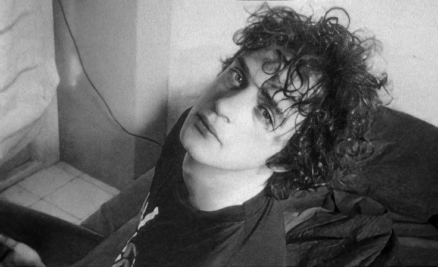

Gustavo Adrián Cerati, nacido el 11 de agosto de 1959 en Buenos Aires, Barracas, fue una figura fundamental en
la música latinoamericana, reconocido principalmente como el líder y vocalista de la influyente banda de rock
Soda Stereo. Su vida estuvo marcada por una dedicación apasionada a la música, una creatividad innovadora y un
impacto perdurable en la escena musical.
La infancia y juventud de Cerati transcurrieron en una atmósfera donde la música ya era parte de su entorno
familiar. Su padre, Juan José Cerati, era ingeniero eléctrico y aficionado al jazz, mientras que su madre,
Lilian Clark, era ama de casa y amante de la música clásica. Esta combinación de influencias musicales
contribuyó al desarrollo temprano de Gustavo como músico.

A lo largo de la década de 1980, Soda Stereo lanzó una serie de álbumes que se convirtieron en clásicos
instantáneos. "Nada Personal" (1985), "Signos" (1986) y "Doble Vida" (1988) ampliaron los horizontes musicales
de la banda y solidificaron su estatus como referente del rock en español. Los conciertos de Soda Stereo se
convirtieron en eventos masivos, atrayendo a multitudes de fanáticos que veneraban la música y la presencia
carismática de Cerati en el escenario.
Más allá de su éxito con Soda Stereo, Cerati también incursionó en proyectos solistas que demostraron su
versatilidad y profundidad como músico. Su álbum debut en solitario, "Amor Amarillo" (1993), mostró un lado más
introspectivo y experimental de su arte, con canciones que exploraban temas de amor, pérdida y redención. El
álbum fue aclamado por la crítica y consolidó la reputación de Cerati como uno de los artistas más innovadores
de su generación.
A lo largo de los años siguientes, Cerati continuó lanzando álbumes en solitario que recibieron elogios de la
crítica y fueron bien recibidos por sus seguidores. "Bocanada" (1999), "Siempre es hoy" (2002) y "Fuerza
Natural" (2009) son solo algunas de las obras maestras que dejó como legado en su carrera en solitario. Estos
álbumes exploraron una variedad de estilos y géneros, desde el rock alternativo hasta la música electrónica,
demostrando la capacidad de Cerati para reinventarse constantemente como artista.
Además de su trabajo en la música, la vida personal de Cerati estuvo marcada por relaciones significativas y
momentos de felicidad y desafíos. Se casó dos veces, primero con la modelo chilena Cecilia Amenábar, con quien
tuvo a su hijo Benito Cerati. Posteriormente, se casó con la modelo argentina Deborah de Corral. Aunque su vida
personal fue objeto de interés público, Cerati mantuvo en gran medida una vida privada reservada.
Trágicamente, en 2010, Cerati sufrió un derrame cerebral después de un concierto en Venezuela, lo que lo dejó en
estado de coma durante varios años. A pesar de los esfuerzos médicos y el apoyo de sus seres queridos y
fanáticos, Cerati nunca se recuperó completamente. El 4 de septiembre de 2014, falleció, dejando un vacío
inmenso en la música latinoamericana y en el corazón de sus seguidores.
El legado de Gustavo Cerati perdura en la música que dejó atrás: las canciones atemporales que escribió con Soda
Stereo, así como sus innovadoras obras en solitario. Su influencia se extiende mucho más allá de las fronteras
de su Argentina natal, llegando a inspirar a generaciones de músicos en todo el mundo. A través de su
creatividad, pasión y dedicación a su arte, Cerati continúa siendo una figura venerada en la historia de la
música, recordado no solo por su talento excepcional, sino también por su humanidad y su profundo impacto en
quienes lo admiraron y lo amaron.